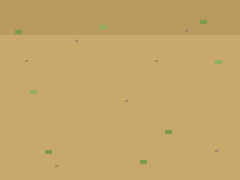

城堡塔防
五次课做出一个完整的街机游戏——先玩成品 → 拆解 → 自己试 → 卡住才看参考做法。上课请用 放映版；本页是全文与进度。
一、开课之前
先玩 1 分钟
👨👩👦 一起 · 先玩 1 分钟
先把成品玩一遍——你接下来五次课，就是要亲手做出它。
游戏解剖图
👨👩👦 一起 · 游戏解剖图（自上而下）
整个游戏 = 五大模块，五次课各做一块：
第 1 课
第 2 课
第 3 课
第 4 课
第 5 课
素材清单
👨👩👦 一起 · 素材
五个角色：敌人、炮塔、子弹、基地、金币——素材包全有。
 金币计分用（可只做变量）
金币计分用（可只做变量）
背景素材包自带课程进度表
👨👩👦 一起 · 课程进度表
二、五次课
第 1 次 · 敌人上路
👨👩👦 一起 · 本章目标
👨👩👦 一起 · 效果与拆解
- 新学路径点列表— 点横 / 点竖 各 8 项
- 新学逼近移动— 每帧走差值的 1/8
- 新学换点判断— 够近就下一个
- 已有重复执行— 永动机
👦 孩子自己 · 自己试试（先别翻答案）
先自己试 10 分钟：素材包里全有，先导入摆好；想怎么做就怎么做，改坏了绿旗能复原；卡住超过 5 分钟，再看下面的参考做法。
👨👩👦 一起 · 概念 · 路径点
路径 = 一串地标
- 点横、点竖 两条列表，第 n 项是第 n 个地标
- 逼近公式：差值 × 1/8，每帧走一点
- 离地标足够近（距离 < 5）就换下一个
👨👩👦 一起 · 参考做法（卡住才看）
- 手工填 8 个地标
建全局列表 点横 / 点竖，监视窗里点 ➕ 手动加 8 项——左下出生 (-220,-120) → (0,-120) → (0,100) → (220,100)，再自己绕两个弯，最后一项放在基地旁 (200,60)✅ 监视窗里两条 8 项的路线
- 敌人沿地标走
当绿旗被点击 将 [当前点] 设为 (1) 重复执行 将 [dx] 设为 ((([点横] 的第 (当前点) 项) - (x 坐标)) / (8)) 将 [dy] 设为 ((([点竖] 的第 (当前点) 项) - (y 坐标)) / (8)) 将x坐标增加 (dx) 将y坐标增加 (dy) 如果 <(([平方] (dx)) + ([平方] (dy))) < (4)> 那么 将 [当前点] 增加 (1)🧰 积木在：变量运动运算（「平方」和「向下取整」一样，套在方括号里）dx、dy 选"仅适用于当前角色"——每帧走差值的 1/8，越近走越慢，天然的减速进站✅ 敌人从出生点一路溜达到基地，全程不用你管 - 实时报告自己的位置
将 [敌x] 设为 (x 坐标) 将 [敌y] 设为 (y 坐标)加在循环末尾（全局变量 敌x/敌y）——下一课的子弹就瞄着它✅ 监视窗里敌x、敌y 实时跳动
👨👩👦 一起 · 验收
- 🗺️ 全程贴路走不穿帮
- 🐢 快到点自然减速
- 🏠 走到最后一点停住
敌人会走路了——你还没法还手，下一课造炮塔。
👨👩👦 一起 · 试一试
路径的手感
🧑 家长先看 · 常见错误
走路两病
👦 孩子自己 · 进阶挑战 · 三选一
控制
外观
运算
👦 孩子自己 · 课后回顾
第 2 次 · 花钱造塔
👨👩👦 一起 · 本章目标
👨👩👦 一起 · 效果与拆解
- 新学金币变量— 经济系统开机
- 新学点击检测— 按下鼠标 + 坐标
- 新学塔位列表— 塔横/塔竖 存档
- 已有克隆— 塔也是分身
👦 孩子自己 · 自己试试（先别翻答案）
先自己试 10 分钟：素材包里全有，先导入摆好；想怎么做就怎么做，改坏了绿旗能复原；卡住超过 5 分钟，再看下面的参考做法。
👨👩👦 一起 · 参考做法（卡住才看）
- 开局发军饷
当绿旗被点击 将 [金币] 设为 (80)
✅ 开局 80 金币，够造两座 - 点击 = 造塔
当绿旗被点击 重复执行 如果 <<按下鼠标?> 与 <(金币) > (29)>> 那么 将 [金币] 增加 (-30) 将 (鼠标的x坐标) 加入 [塔横] 将 (鼠标的y坐标) 加入 [塔竖] 移到 x: (鼠标的x坐标) y: (鼠标的y坐标) 克隆 [自己] 播放声音 [pop] 等待 <<按下鼠标?> 不成立>🧰 积木在：写在炮塔角色上；「等待不成立」防连点，一下只造一座✅ 点哪塔立哪，金币哗哗扣 - 分身亮出来站岗
当作为克隆体启动时 显示
✅ 塔立在点击处，一动不动站岗
👨👩👦 一起 · 验收
- 💰 钱不够点不动
- 🗼 点哪造哪不叠塔
- ↩️ 绿旗：金币回 80、清塔
有塔没钱开火——下一课上子弹。
👨👩👦 一起 · 试一试
经济手感
🧑 家长先看 · 常见错误
造塔两病
👦 孩子自己 · 进阶挑战 · 三选一
运算
变量
变量
👦 孩子自己 · 课后回顾
第 3 次 · 自动开火
👨👩👦 一起 · 本章目标
👨👩👦 一起 · 效果与拆解
- 新学定时开火— 每 0.8 秒一发
- 新学锁定目标— 记下敌人当时坐标
- 新学命中掉血— 敌人血量变量
- 已有逼近移动— 第 1 课的 1/6 走法
👦 孩子自己 · 自己试试（先别翻答案）
先自己试 10 分钟：素材包里全有，先导入摆好；想怎么做就怎么做，改坏了绿旗能复原；卡住超过 5 分钟，再看下面的参考做法。
👨👩👦 一起 · 参考做法（卡住才看）
- 敌人先有血
当绿旗被点击 将 [敌血] 设为 (3)
✅ 敌人血量 3（监视窗可见） - 子弹从随机塔出发
当绿旗被点击 隐藏 重复执行 等待 (0.8) 秒 如果 <([塔横] 的项目数) > (0)> 那么 将 [选塔] 设为 (在 (1) 和 ([塔横] 的项目数) 之间取随机数) 移到 x: ([塔横] 的第 (选塔) 项) y: ([塔竖] 的第 (选塔) 项) 克隆 [自己]🧰 积木在：写在子弹角色上——塔越多，火力越密✅ 每隔 0.8 秒，从某座塔冒出一颗子弹 - 锁定 + 直扑目标
当作为克隆体启动时 显示 将 [目标x] 设为 (敌x) 将 [目标y] 设为 (敌y) 重复执行直到 <<碰到 [敌人]?> 或 <(y 坐标) < (-170)>> 将x坐标增加 (((目标x) - (x 坐标)) / (6)) 将y坐标增加 (((目标y) - (y 坐标)) / (6)) 如果 <碰到 [敌人]?> 那么 广播 [命中] 删除此克隆体出生瞬间拍下目标的"照片"（目标x/y）——之后直线扑过去，简单可靠✅ 子弹斜着飞向敌人，撞上消失 - 敌人挨打
当接收到 [命中] 将 [敌血] 增加 (-1) 播放声音 [pop] 如果 <(敌血) < (1)> 那么 将 [金币] 增加 (5) 隐藏 等待 (1) 秒 将 [敌血] 设为 (3) 显示教学版敌人打倒 1 秒后原地复活（波次下一课做）；击杀奖励 5 金币——经济循环转起来了✅ 打三发倒一次，金币 +5，敌人复活重来
👨👩👦 一起 · 验收
- 🔫 全自动：造好塔就能挂机
- 💥 三发击倒、奖励 5 金币
- 💰 打怪挣钱 → 挣钱造塔
核心循环转起来了：塔打怪、怪生钱、钱造塔。
👨👩👦 一起 · 试一试
火力手感
🧑 家长先看 · 常见错误
开火三病
👦 孩子自己 · 进阶挑战 · 三选一
运算
运动
控制
👦 孩子自己 · 课后回顾
第 4 次 · 一波又一波
👨👩👦 一起 · 本章目标
👨👩👦 一起 · 效果与拆解
- 新学发车员— 本体克隆 8 连发
- 新学波号变量— 波次计数 + 难度
- 新学基地血— 终点有了代价
- 已有克隆体自删— 死/到站都回收
👦 孩子自己 · 自己试试（先别翻答案）
先自己试 10 分钟：素材包里全有，先导入摆好；想怎么做就怎么做，改坏了绿旗能复原；卡住超过 5 分钟，再看下面的参考做法。
👨👩👦 一起 · 参考做法（卡住才看）
- 基地先有血
当绿旗被点击 将 [基地血] 设为 (10) 将 [波号] 设为 (1)
✅ 基地 ❤×10、波号 1 - 发车员：一波 8 个
当绿旗被点击 隐藏 重复执行 重复执行 (8) 次 移到 x: (-220) y: (-120) 克隆 [自己] 等待 (2) 秒 等待 (8) 秒 将 [波号] 增加 (1)🧰 积木在：写在敌人本体上（本体从此不下场，只发车）波间 8 秒喘息——给玩家攒钱补塔的窗口✅ 敌人一个接一个上场，一波结束歇 8 秒 - 到基地 = 扣血
如果 <(当前点) > ([点横] 的项目数)> 那么 将 [基地血] 增加 (-1) 删除此克隆体加在敌人克隆体的走路循环里——走完最后一个地标，基地 −1、自己消失✅ 漏网之鱼钻进基地，红心少一格 - 死亡也回收
当接收到 [命中] 如果 <(敌血) < (1)> 那么 将 [金币] 增加 (5) 删除此克隆体升级第 3 课的"复活"脚本：击杀改成直接删除克隆体——尸体不清，路会堵✅ 打死的敌人当场消失，不占路 - 战利品：击杀掉宝
当接收到 [命中] 如果 <(敌血) < (1)> 那么 将 [掉什么] 设为 (在 (1) 和 (4) 之间取随机数) 如果 <(掉什么) = (1)> 那么 移到 x: (x 坐标) y: (y 坐标) 克隆 [宝物]🧰 积木在：写在宝物角色（本体隐藏，两造型：金袋 / 红心）；25% 概率击杀奖励从固定 +5 金升级为"可能掉宝"——打怪有了惊喜✅ 敌人倒下可能弹出一个金袋或红心 - 宝物分身：小跳落地 + 点击拾取
当作为克隆体启动时 将 [宝物类型] 设为 (在 (1) 和 (2) 之间取随机数) 如果 <(宝物类型) = (1)> 那么 换成 [火力宝物] 造型 显示 重复执行直到 <(计时器) > (4)> 等待 (0.05) 秒 删除此克隆体宝物本体加「当角色被点击」→ 广播 [拾取]：类型 1→金币+10，类型 2→基地血+1（上限 12）；4 秒不捡就消失（闪烁提醒）✅ 点击金袋 +10 金；点击红心回一格基地血
👨👩👦 一起 · 验收
- ⚔️ 一波 8 个、波间喘息
- 🏠 漏一个扣一心
- 💰 击杀回收干净
有血、有钱、有波次——只差一个结局。
👨👩👦 一起 · 试一试
波次手感
🧑 家长先看 · 常见错误
波次两病
👦 孩子自己 · 进阶挑战 · 三选一
变量
外观
事件
👦 孩子自己 · 课后回顾
第 5 次 · 荣耀或陷落
👨👩👦 一起 · 本章目标
👨👩👦 一起 · 效果与拆解
- 已有基地血 / 波号— 第 4 课的变量
- 新学胜利判定— 撑过 3 波
- 已有失败判定— 血 <1
- 已有发布会— 三句话
👦 孩子自己 · 自己试试（先别翻答案）
先自己试 10 分钟：素材包里全有，先导入摆好；想怎么做就怎么做，改坏了绿旗能复原；卡住超过 5 分钟，再看下面的参考做法。
👨👩👦 一起 · 参考做法（卡住才看）
- 两种结局
如果 <(基地血) < (1)> 那么 广播 [游戏结束] 停止 [全部脚本] 如果 <(波号) > (3)> 那么 等待 (10) 秒 广播 [游戏结束] 停止 [全部脚本]挂在发车员循环末尾：每发完一波查一次；胜利前等 10 秒清场✅ 基地血空立刻输；撑过第 3 波清场后赢 - 结局面板
当接收到 [游戏结束] 如果 <(基地血) < (1)> 那么 说 [基地陷落 · 按绿旗再战] (3) 秒 否则 说 [守住了！城堡万岁] (3) 秒✅ 结局一句话，胜负分明 - 发布会：三句话
1️⃣ 我做了什么2️⃣ 最难在哪3️⃣ 想怎么改现场打一局给全家看：你的阵，你的经济，你的胜利✅ 讲满三句，塔防收官
👨👩👦 一起 · 验收
- 🏰 守 3 波判胜
- 💔 基地血空判负
- ↩️ 绿旗全复原
- 🎤 发布会讲满三句
塔防完成——最后一关：俄罗斯方块。
👨👩👦 一起 · 试一试
终局平衡
🧑 家长先看 · 常见错误
终局两坑
👦 孩子自己 · 进阶挑战 · 三选一
变量
变量
控制
👦 孩子自己 · 课后回顾
三、本作总结
- 第 1 课🗺️ 列表·路径点
- 第 2 课💰 变量·金币
- 第 1 课➗ 运算·逼近
- 第 3 课📣 广播
- 敌人不认方向键：路径点导航 + 逼近公式
- 经济循环：塔打怪、怪生钱、钱再造塔
- 追踪 = 拍下目标照片，再直线扑过去